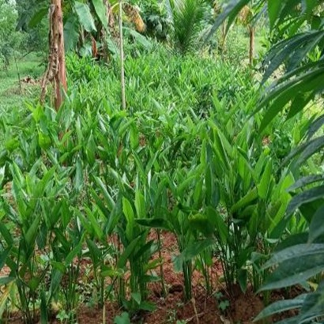
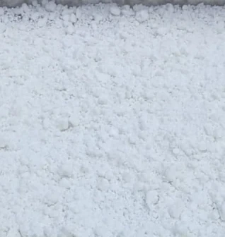
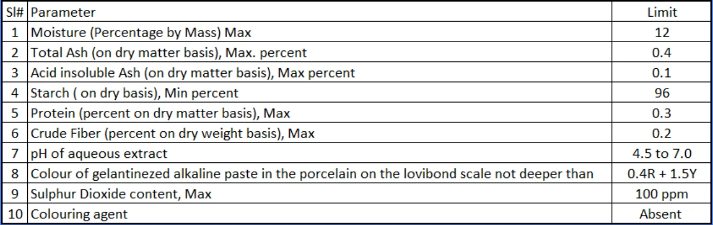

Arrowroot
At Sun Green Farms, arrowroot is more than just a crop for us—it's a symbol of purity, tradition, and natural healing. Grown in the rich, chemical-free soil of our farm, arrowroot is cultivated using eco-friendly and sustainable methods that respect both people and the planet.
Although several varieties of arrowroot exist, we cultivate Maranta Arundinacea, commonly known as white arrowroot, which continues to gain popularity among health-conscious individuals and those seeking natural, unprocessed products. Its starch is highly digestible, making it suitable for culinary, medicinal, and select industrial applications.

Maranta Arundinacea

Harvested arrrowroot

Arrowroot Starch, kept for drying
Arrowroot reaches consumers in two main forms: powder and pure starch. The powdered form is typically produced by slicing the tubers, sun-drying them, and grinding them into a coarse flour that retains natural fibers. In contrast, starch extraction follows a more traditional, time-intensive process. The tubers are first crushed into a pulp, then repeatedly washed and filtered to separate the starch from fibrous matter. While this method is more laborious, it yields a much purer product.
Since dietary fiber in raw form can be harder to digest—especially for young children and the elderly — the pure starch form is preferred for its gentle effect on the stomach. At Sun Green Farms, we follow this meticulous starch extraction process to offer a product that supports wellness and is perfectly suited for all age groups—from infants to elders. We use traditional farming techniques ensuring that each root grows slowly, naturally, and without synthetic fertilizers or pesticides.
Why Choose Arrowroot Starch?
- Arrowroot starch is a light, gluten-free alternative that is low in fat and remarkably easy to digest, making it suitable for people of all ages. Traditionally valued as a weaning food for infants, it is gentle on the stomach and free from common allergens.
- Being naturally gluten-free, arrowroot is a safe choice for individuals with celiac disease or gluten sensitivity. It also contains resistant starch, which functions like soluble fiber — nourishing beneficial gut bacteria and supporting overall digestive health.
- In many traditional practices, arrowroot gruel or starch water is given to help manage diarrhea and soothe the gut. Despite being low in calories, arrowroot provides a sense of fullness, making it a smart addition to balanced and weight-conscious diets.
Packaging at Sun Green Farms
Once thoroughly dried, the arrowroot starch is gently pounded to break any clumps and then finely sieved to achieve a smooth, uniform texture. This step not only enhances its appearance but also improves solubility in food preparations. The final product is carefully packed in moisture-resistant, heat-sealed pouches made of kraft paper with a food-grade PE or foil lining. Each pouch is equipped with a zip-lock closure, allowing consumers to conveniently reseal the pack after opening—ensuring freshness and hygiene during repeated use. While traditionally arrowroot starch can be stored for over two years, we recommend using it within one year for optimal freshness and quality. For storage beyond six months, it is advisable to transfer the contents to an airtight container and keep it in a cool, dry place.
Certification and Lab Testing
Arrowroot starch from Sun Green Farms is certified by FSSAI (License No: XXXXXXXX), confirming that it meets the highest standards of purity, safety, and quality. As per FSSAI guidelines outlined in Chapter 2 (Food Product Standards), Section 4 (Cereals and Cereal Products), Item 14 (Starchy Foods), several mandatory quality and safety parameters must be fulfilled to obtain certification. Additionally, our product complies with the Indian Standard IS 1006:1984 – Specification for Arrowroot Starch. We are proud to confirm that Sun Green Farms’ Arrowroot Starch has successfully passed 100% of these tests, as conducted by an FSSAI-approved laboratory. A copy of the lab test report is available and can be shared upon request for anyone wishing to verify the product’s quality and regulatory compliance.
Test Parameters required by FSSAI are as below :
